2022-05-29 08:00
He who walks with wise men will be wise, But the companion of fools will be destroyed. (Proverbs 13:20)
On Saturday, May 14th, 2022 an 18 year-old white supremacist in full body armor walked into an East Side Buffalo, New York supermarket and slaughtered ten Black people precisely because they were Black.
Payton Gendron left behind a 180-page manifesto citing the Great Replacement – a conspiracy theory which holds that Liberals and mainly Jews (“globalists” or the “new world order”) are intent on replacing white people with compliant mongrel races who reproduce at higher rates. “This crisis of mass immigration and sub-replacement fertility,” Gendron wrote, “is an assault on the European people that, if not combated, will ultimately result in the complete racial and cultural replacement of the European people.”
For white supremacists, the end of white domination is as frightening as death. Though whites dominate government, courts and commerce, the fears of white supremacists have nevertheless magnified into nightmares of “white genocide” and “replacement” and are found not only in the manifestos of mass-murderers but in mainstream Republican political dogma.
And this includes Bristol County’s white supremacist sheriff, Thomas M. Hodgson.
Replacement was the theme of a 1973 novel by French nationalist Jean Raspail, a book that has captured the imagination of American white supremacists like Steve Bannon, Stephen Miller, Tucker Carlson, the Identitarian movement, and a considerable number of anti-immigration and white supremacist organizations – three to which Bristol County Sheriff Thomas M. Hodgson has close ties and all of which flog the narrative of the Great Replacement.
Raspail’s Le Camp des Saints was first published in 1973, translated into Englsh two years later and distributed by the Social Contract Press (more on this Tanton group later). The publisher described the book’s theme: “By the year 2000 there will on present projections be seven billion people swarming on the surface of the Earth. And only nine hundred million of them will be white.” Kirkus Reviews noted the book’s inherent fascism: “The publishers are presenting The Camp of the Saints as a major event, and it probably is, in much the same sense that Mein Kampf was a major event.”
Inspired by Raspail, in 2012 another French writer, Renaud Camus (no relation to Albert Camus), popularized the “Great Replacement” theory in a self-published novel by the same name, Le Grand Remplacement. Camus also penned You Will Not Replace Us, an homage to the American Alt-Right, and Tweeted: “the genocide of the Jews was undoubtedly more criminal but still seems somewhat small compared to global [white] replacement.”
In fact, le grand remplacement dates back at least to the Thirties when the expression was used by Nazi French collaborator Rene Binet, whose brigade ended up (I’m not making this up) in charge of defending Hitler’s bunker. An article from radioFrance notes that the phrase was probably used even earlier to characterize slave revolts in Haiti and Martinique, as well as to disparage Jews around the time of the Dreyfus affair.
While never truly defeated, Western fascism has been making a bit of a come-back. France’s Rassemblement National, Germany’s Alternative für Deutschland, England’s British National Party, Hungary’s Fidesz, and Spain’s Vox all wrap themselves in the same white Christian nationalism and anti-democratic authoritarianism that now characterize the American Republican Party. And all are preoccupied with “invasion” or “replacement” by non-white immigrants. It is no coincidence that the American Conservative Union’s CPAC Convention took place in Hungary this year. Fusing pan-European Identitarianism and resurrected fascism with good old-fashioned American white supremacy has long been a project of extremists like Steve Bannon.
But white supremacy cannot succeed without maintaining white Christian privilege and white numerical superiority, at least in the voting booth. Laws and maneuvers privileging white Christians, limiting immigration for non-whites, maintaining police control over largely non-white communities, preventing the diminution of the “white race” by abortion, and ensuring white election advantage – all are methods of delaying the inevitable loss of white supremacy.
Spike Lee’s film BlacKkKlansman opens with an unhinged racist, Dr. Kennebrew Beauregard, standing in front of a screen as D.W. Griffith’s Birth of a Nation is projected onto his face. Beauregard laments the halcyon days when Anglo-Saxons were unchallenged masters of the nation, and he repeats several times, “We had a great way of life.” Today that lost “great way of life” has become a dog whistle for white supremacists and anti-immigrant groups who want to “make American great again” by making it white again.
Beauregard may be a fictional character, but John H. Tanton was not. Tanton was a Michigan ophthalmologist who single-handedly created a network of over a dozen white supremacist and anti-immigrant groups, half of which the Southern Poverty Law Center describes as hate groups.
The three best-known are: the Federation for American Immigration Reform (FAIR), a lobbying and action group with great influence within the Trump administration; the Center for Immigration Studies (CIS); and NumbersUSA, all of which produce dubious anti-immigration reports and statistics. Tanton also created the Social Contract Press, which first published The Camp of the Saints.
Thomas Hodgson sits on FAIR’s National Board of Advisors and has appeared at anti-immigrant events sponsored by both FAIR and CIS.
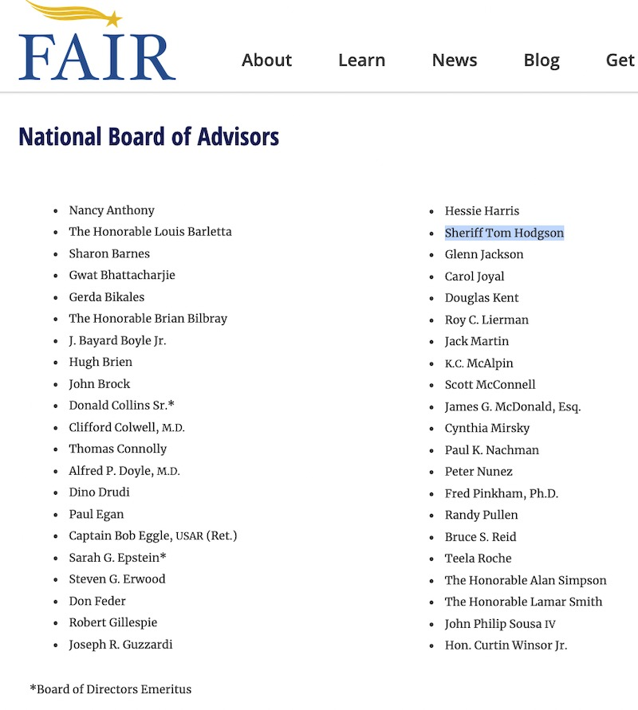
Though they might sugar-coat it a bit, FAIR’s mission is the preservation of Anglo-Saxon dominance from rapacious hordes of non-white, non-English speakers who threaten to replace white Christians and destroy America, thanks to the subversive efforts of globalists and socialists.
Once mainly an anti-immigration lobbying group, during Trump’s presidency FAIR became deeply embedded in his administration. MediaMatters notes that the mainstream media often cites FAIR’s untrustworthy “statistics” indiscriminately. The Libertarian CATO Institute slams FAIR’s studies and statistics as “fatally flawed” and “sloppy.”
FAIR’s legal wing, the Immigration Reform Law Institute, formerly headed by Kris Kobach, provides legal assistance to anti-immigrant groups. In recent years IRLI has dabbled in disenfranchising voters of color based on the claim that “illegals” are risking everything to throw elections for Democrats by voting illegally.
FAIR’s founder John Tanton expressed the organization’s mission most clearly: “I’ve come to the point of view that for European-American society and culture to persist requires a European-American majority, and a clear one at that.” And when Tanton spoke of “Europeans” he meant whites: “As Whites see their power and control over their lives declining, will they simply go quietly into the night? Or will there be an explosion?”
George Washington University’s Gelman Library contains a repository of letters between Tanton and Otis Graham, a close friend of Tanton who helped him launch and run FAIR in the 1980s and who served as a board member of the Center for Immigration Studies (CIS). Tanton and Graham wanted to create what they called a “League for European-American Defense, Education and Research.”
In 1991 Tanton and Graham took great interest in KKK leader David Duke’s campaign for the Louisiana governorship and were encouraged by Duke’s founding of the National Association for the Advancement of White People: “[T]here is a lot going on out there on the cultural and ethnic (racial) difference” [front], Tanton wrote. Appealing to racists was ultimately going to be “all tied to immigration policy. At some point, this is going to break the dam.”
FAIR, then, was created to mirror Duke’s approach and promote white interests: “There is currently no socially acceptable umbrella organization to which persons of European ancestry can belong to defend and promote their common interests,” Tanton wrote. “Absent such an organization in a highly organized society, European-Americans will continue to see their history rewritten, their character and accomplishments denigrated, and their faults magnified. They will steadily lose ground and position to other groups… For those not resigned to this gradual or not so gradual decline, a new organization tailored to the needs and interests of European-Americans as a group is essential.”
As a proponent of eugenics, Tanton also argued for sterilization of the “lesser” races: “Do we leave it to individuals to decide that they are the intelligent ones who should have more kids? And more troublesome, what about the less intelligent, who logically should have less? Who is going to break the bad news to less intelligent individuals, and how will it be implemented?”
FAIR’s current president is Dan Stein, who often coordinates media appearances and travel for Bristol County Sheriff Thomas Hodgson.
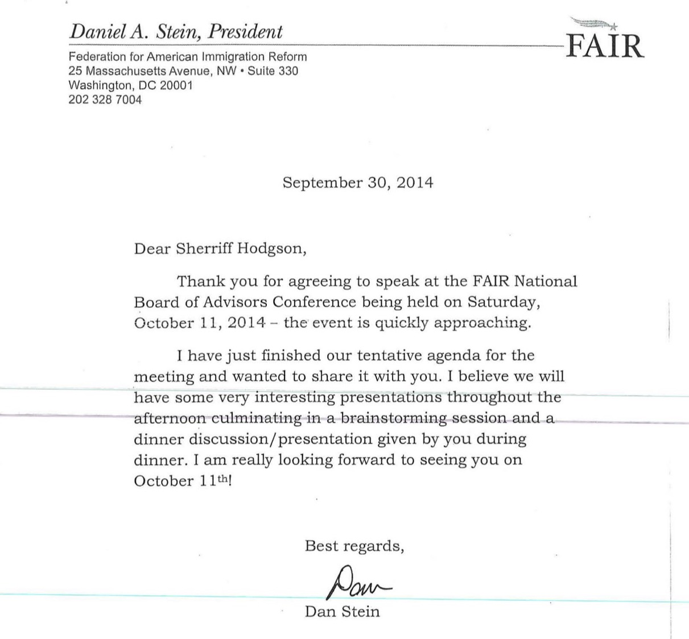
In a 1997 interview with “Alt-Right” darling Tucker Carlson, Stein claimed that Latino refugees arriving in the U.S. are godless, low-IQ haters: “Immigrants don’t come all church-loving, freedom-loving, God-fearing […] Many of them hate America, hate everything that the United States stands for. Talk to some of these Central Americans. Should we be subsidizing people with low IQs to have as many children as possible, and not subsidizing those with high ones?”
For Stein. immigration is a matter of maintaining white political power. He worries about a power shift attending newer waves of immigration. “It’s almost like they’re getting into competitive breeding,” Stein said in 1991. “You have to take into account the various fertility rates in designing limits on immigration.”
In addition to Stein’s views on recent immigrants, FAIR’s president indulges in a conspiracy theory that invokes the same villains responsible for the Great Replacement: “I blame ninety-eight percent of responsibility for this country’s immigration crisis on Ted Kennedy and his political allies, who decided some time back in 1958, earlier perhaps, that immigration was a great way to retaliate against Anglo-Saxon dominance and hubris, and the immigration laws from the 1920s were just this symbol of that, and it’s a form of revengism…”
Like FAIR, the Center for Immigration Studies (CIS) was founded by John Tanton and publishes questionable reports on immigration. According to the Southern Poverty Law Center, CIS maintains extensive links to white supremacist and antisemitic groups. In 2017 the Southern Poverty Law Center documented 2,012 occasions on which CIS circulated white nationalist content.
CIS Executive Director Mark Krikorian, who first worked at FAIR, quipped after the deadly 2010 Haitian earthquake: “My guess is that Haiti’s so screwed up because it wasn’t colonized long enough.”
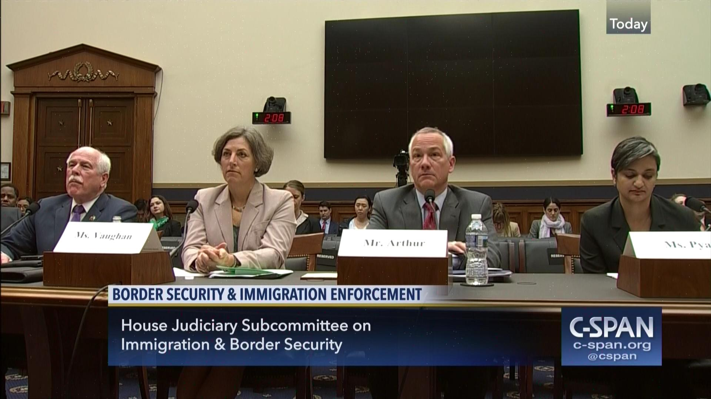
Jessica Vaughan, CIS Director of Policy Studies, may be the organization’s best known face – and certainly well-known to Hodgson, with whom she has appeared repeatedly. Vaughan is well spoken and comfortable testifying before Congressional subcommittees. Still, as the Anti-Defamation League reports, Vaughan had no misgivings in April 2014 when she gave an interview to an antisemitic newspaper, the American Free Press, founded by Holocaust denier Willis Carto.
In 2011, According to FAIR’s annual report, the organization began cultivating sheriffs like Hodgson. “In 2011, we identified sheriffs who expressed concerns about illegal immigration.” FAIR staff “met with these sheriffs and their deputies, supplied them with a steady stream of information, established regular conference calls so they could share information and experiences, and invited them to come to Washington to meet with FAIR’s senior staff. We invited sheriffs who played the most prominent roles in addressing illegal immigration locally to FAIR’s national talk radio event, Hold their Feet to the Fire, where they shared their stories and expertise with listeners across the country.” Since roughly that time Hodgson has been a FAIR spokesman.
In July 2014 Hodgson visited the Rio Grande on a trip organized by FAIR’s National Field director, Susan Tully, who reported: “What we’re doing down here in the Rio Grande Valley is all about public education of our law enforcement officials so that they can see exactly what is going on along the border.”
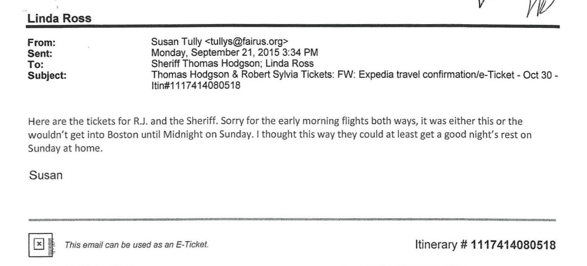
The Anti-Defamation league already regarded Tully as a conspiracy theorist. She claimed, with no proof, that four million immigrants were granted amnesty in 1986 and – again invoking the Great Replacement – charged the Obama Administration with running school buses across the border to provide free K-12 education for Mexicans. The SPLC tracked Tully’s involvement in organizing a racist housing ban on immigrants in Fremont, Nebraska in which she called immigrants “invaders.” And, for organizing purposes, Tully simply made up the “fact” that Illinois has more “illegal aliens” than California. Tully has also been involved with an Oregon anti-immigration group with extensive militia and white supremacist links.
When FAIR National Advisory Board member Richard Lamm said that “new cultures” in the U.S. are “diluting what we are and who we are,” he didn’t mean just Latinos but Muslims as well. Susan Tully clarified Lamm’s remarks: “They are not coming here to become Americans,” she said. Rather, Muslims are “promoting colonization of their own religion, of their own culture in towns and taking them over.”
Tully has been spreading hate since 2002 for FAIR. In one interview with radio host Phil Valentine at a 2006 FAIR event in Tennessee, Tully claimed that a Border Patrol agent in Laredo, Texas described arresting the same man seven times. Tully said she asked the agent, “What do you do on the eighth time?” and Valentine interjected: “Shoot him!” Tully laughed and the FAIR crowd cheered.
In March 2015 Hodgson appeared with Tully at the Fisherman’s Club in New Bedford. He has appeared at most of FAIR’s “Hold their Feet to the Fire” events coordinated by Tully, most recently in 2016, 2017, 2018, 2019 and 2021.
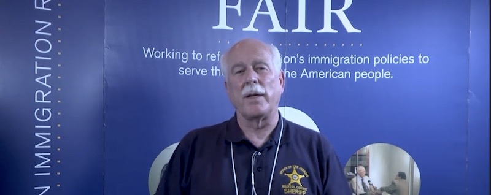
In 2016 Hodgson was one of three speakers at a “Patriots Unity Day” rally in Randolph. The second speaker was Jessica Vaughan of CIS. The third speaker was Raymond Hanna from the anti-Muslim hate group ACT for America which also maintains white supremacist ties. ACT and FAIR have strong connections — and Tully figures into all of them. In 2016 Tully spoke at an ACT for America event in Idaho. ACT for America also happens to have a Nazi problem. In Arkansas ACT’s “March Against Shariah” events were organized by a Nazi and publicized on Stormfront.
On March 28, 2017 Hodgson testified with CIS Director of Policy Studies Jessica Vaughan at Border Security and Immigration Enforcement hearings in Washington.
In June 2017 the Sheriff appeared with Dan Stein and Michelle Malkin at an annual “Hold their feet to the fire” broadcast with anti-gay bigot Sandy Rios. Malkin too has links to white supremacist groups, including VDARE, as well as to Islamophobic groups. Malkin opposes the 14th Amendment, which gave citizenship to slaves. And, of course, Malkin is also a big fan of both John Tanton and The Camp of the Saints.
Over the years Hodgson has maintained numerous associations with Muslim-bashers, Anti-semites, gay-bashers, Birthers, and every variety of conspiracy theorist — many of them members of FAIR’s National Advisory Board. In November 2017 Hodgson joined that board.
When asked if his board membership might be construed as endorsement of his colleagues’ views, or at least be poor judgment on his part, Hodgson bristled: “I’m on a Board of Advisors. I go once a year to listen.”
But Hodgson is too modest. In 2014 the sheriff was not listening but speaking to FAIR’s National Board of Advisors when he conducted a two-hour dinner discussion on “The Effect of the President’s Decisions on DACA and its Impact on Our Law Enforcement Challenges.” In 2016 Hodgson participated in the National Board’s “Sanctuary Cities and Law Enforcement” roundtable with Putman County, NY Sheriff Donald Smith and FAIR’s Law Enforcement Relations Manager, Robert Najmulski. Half an hour later, FAIR Media Director Ira Mehlman gave a talk entitled “Soros Hacked: The Truth Behind His Big Money Network to Destroy U.S. Borders.”
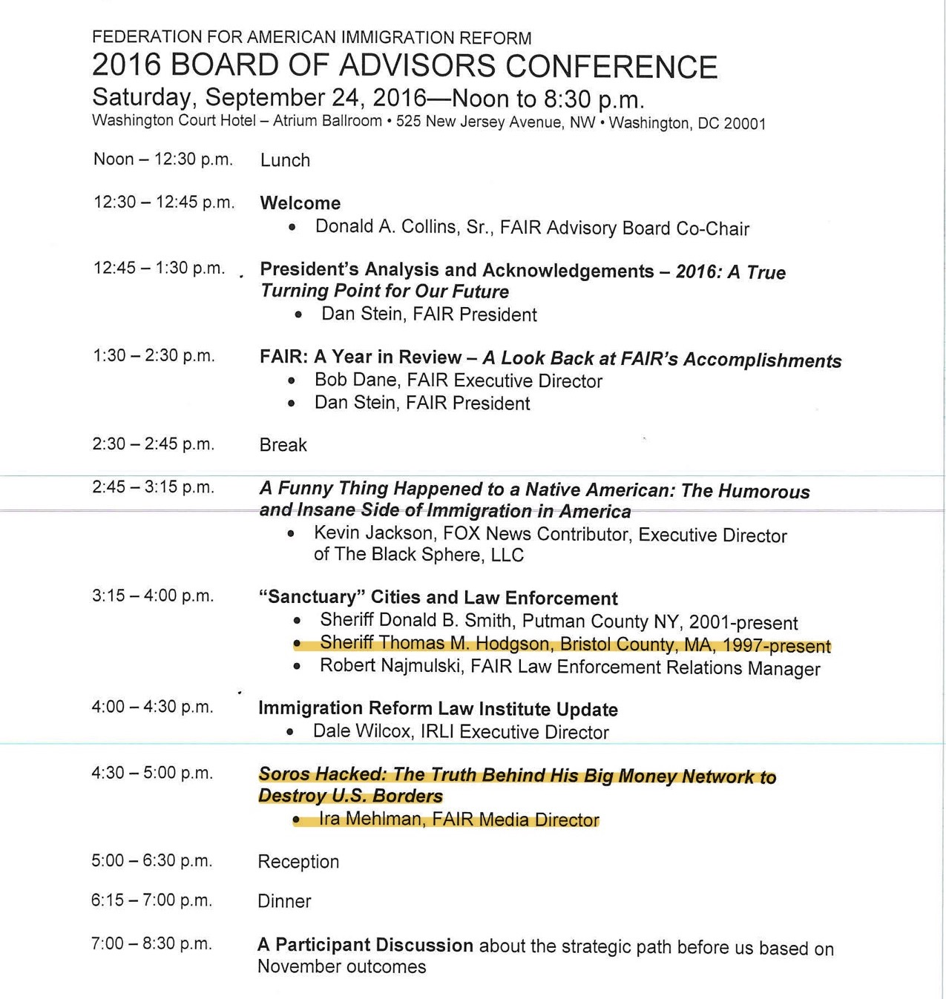
Hodgson was present for Mehlman’s analysis of materials that Russian hackers had stolen from Soros’ Open Society Institute, which Mehlman caled a “shadowy foundation” with a “globalist agenda” to attack U.S. immigration policy. But “globalist” is often white supremacist code for “Jewish” and FAIR, as we will shortly see, has an axe to grind with Soros not only because he is a liberal philanthropist, but also because he is a liberal Jew.
Besides Hodgson, some of FAIR’s National Board members include:
Lou Barletta, former mayor of Hazelton, PA who signed anti-immigration legislation in 2006 that was declared illegal a year later;
Sharon Barnes, clearly no DACA lover, who wrote: “It is our country. They and their parents need to be kicked out […] strengthen our laws and get rid of the locusts;”
Gerda Bikales, who regards Spanish as a ghetto language: “I don’t think Yiddish or Italian represented a threat to the union. But we are now setting ourselves up for an entrenched language ghetto;”
William Chip, who wants to repeal the 14th Amendment;
Donald A.Collins, who contributes to the white nationalist journal VDARE;
Dino Drudi, another Massachusetts zealot who has written for VDARE;
Don Feder, a Muslim-basher who thinks US troops should have “shoot-to-kill” orders on the Southern border;
Robert Gillespie, a proponent of population control — not for white Christians but in developing countries;
Joseph Guzzardi, a member of VDARE’s “editorial collective;”
Carol Joyal, who wrote a review of The Camp of the Saints calling it a “prophecy” of Third World destruction of the West while everyone else just called it racist;
Richard Lamm, former Colorado governor who said that “new cultures” in the U.S. are “diluting what we are and who we are;”
K.C. McAlpin, an Islamophobe who wants to ban Muslims for ideological reasons: “Congress has used that power in the past to ban the immigration of Communist Party and National Socialist (Nazi) party members who were deemed to be threats to our national security. This case is no different;”
Scott McConnell, another VDARE author, Executive Director at Lifeway Research (“be ready when homosexuality devastates”), and a member of the Family Research Council;
Paul Nachman, a Montana white supremacist who writes for VDARE, calls refugees “good liars,” and questions the existence of “moderate Muslims;”
Robert D. Park, founder of the “Article IV - Section 4 Foundation,” a group which maintains that government has abdicated its responsibility to uphold a Constitutional clause requiring it to defend the U.S. from “invasion;”
Randy Pullen, former chairman of the Arizona GOP and self-appointed expert on black crime: “Yes black lives matter. The best way to end the slaughter of young black men is to take guns away from blacks as they are the main killers;”
John Philip Sousa IV, great grandson of the famous musician, Birther, and friend of Joe Arpaio;
Alan N. Weeden, whose family owns the Weeden Foundation, major donor to white supremacist initiatives, and proponent of Secure ID, a national identification system.
Although Hodgson swims with racists, Birthers, and antisemites, If there is one group to which he has more connections than any other, it is Muslim bashers.
In 1998 Hodgson was among the first group of municipal public safety officials to attend a four-day conference in Leesburg, Virginia on Strengthening the Public Safety Response to Terrorism. The conference was organized by the International Association of Fire Chiefs in conjunction with the U.S. Bureau of Justice Assistance and brought together police and fire chiefs from most metropolitan areas of the United States.
In an interview Hodgson said: “We were down there for four days to learn about this new thing that was coming onto our doorstep if we — Actually we were far behind in law enforcement. Because there [were] already people, terrorist activity long going on before that. In fact, if you look at [Steven Emerson’s] ‘American Jihad’ which will be worth your watching, you will see people — Muslims raising their — terrorists rising their rifles, dancing in the hall above stores in New York, saying, kill the infidels, kill the infidels. It’s all on tape. But anyway, so my training down there, I’m thinking, OK, you know what? This is good training, it’s good to be aware. The bag they gave us to carry our materials had a stencil on the front of it with the New York skyline with a target on one of the World Trade Center.”
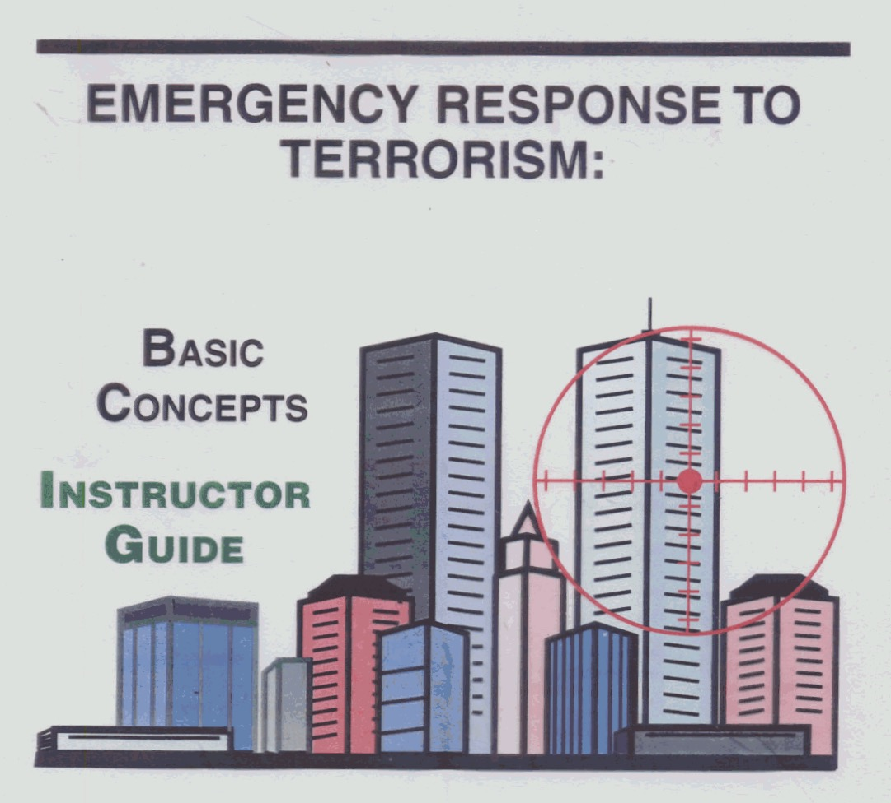
Steven Emerson’s account of American Muslim rooftop celebrations of 9/11 in New Jersey, and Donald Trump’s recollections of the same have both been discredited. But Hodgson is drawn to self-anointed terrorism and Islam “experts” regardless how unreliable their information or their memory.
In 2015 Hodgson appeared with Dennis Michael Lynch at Ahavath Torah Congregation in Stoughton, Massachusetts, a synagogue run by Rabbi Jonathan Hausman – another self-appointed national security expert. Hausman’s temple had previously hosted Dutch neo-fascist and Islam hater Geert Wilders. Over 100 members of the clergy, including other rabbis, protested a similar hate fest the synagogue hosted the following year featuring Muslim-basher Frank Gaffney and Christian nationalist Jerry Boykin. When asked about Hodgson’s talk with Hausman, he explained he was just there doing his duty to inform the public about terrorism: “They asked me to come speak about terrorism. That’s what they asked me to do. So I was I was to speak with them. […] I was asked — I was invited to go there to speak. That’s why I was there, because of my my involvement with the terrorism task force.”
Lynch’s film, “They Come to America,” was reviewed by the Anti-Defamation League. “In the documentary, Lynch travels the country interviewing people about undocumented immigration. Lynch talks to figures from anti-immigrant groups such as NumbersUSA and the Federation for American Immigration Reform [both Tanton groups]. Lynch also interviews Glenn Spencer of the anti-Hispanic hate group American Border Patrol.”
Like Hodgson, Lynch is a supporter of the Constitutional Sheriff Movement. In 2014 Lynch made a fawning documentary about sovereign citizen rancher Cliven Bundy and in 2016 his bid for president was so off-the-wall that the GOP stood clear. Lynch routinely exaggerates the number of undocumented immigrants living in the United States, claims that the Chinese are sneaking across the Mexican border in order to inflict a “cyber 911” on the U.S., and that ISIS is bringing terrorists into the U.S. via Mexico. This is exactly what we hear from Hodgson.
In 2018, Hodgson appeared on FOX News with Bernard Kerik, claiming that in 2015 MS-13 had ordered its members to expand the gang’s presence on Nantucket. Both claimed that MS-13 was recruiting in island high schools. The supposed metastasis of MS-13 in New England has been one of Hodgson’s favorite themes. Yet, as violent and grisly as the gang’s occasional handiwork is, MS-13 membership is down dramatically. In fact, in 2018 the U.S. Attorney for Massachusetts, Andrew Lelling, said that “we have all but eradicated MS-13 in the Greater Boston area. We’re running out of MS-13 targets.”
Another Islamophobic group that Hodgson is connected to, ACT for America, was founded in 2007 by Brigitte Gabriel. It claims to have more than 1,000 chapters around the country, and espouses the crudest sort of anti-Muslim hate. Both the Anti-Defamation League and the Southern Poverty Law Center have documented ACT’s many links with antisemitic, neo-Nazi, Christian right, Identitarian, and white supremacist groups. ACT for America sponsors anti-Muslim legislation and organizes anti-Muslim events with neo-Nazis. ACT for America organizes around the claim that Christianity and Judaism are under attack by Islam. Pastor Jack Hibbs and Stoughton Rabbi Jon Hausman — whom we met earlier — were both speakers at ACT’s 2016 “Religious Persecution” conference in Washington, DC.
In July 2007 Gabriel spoke at the Annual Convention of Pastor John Hagee’s Christians United for Israel (CUFI): “The difference, my friends, between Israel and the Arabic world is quite simply the difference between civilization and barbarism. It’s the difference between good and evil and this is what we’re witnessing in the Arab and Islamic world. I am angry. They have no soul! They are dead set on killing and destruction.”
Perhaps because of its far-too-frequent neo-Nazi connections, ACT for America became too toxic for even Donald Trump. Following an article in the Miami Herald announcing ACT’s gala at Mar-a-Lago, which was to have been headlined by Michelle Malkin (another friend of Hodgson’s), the Trump administration had second thoughts: “[The gala] will absolutely not be taking place at Mar-a-Lago,” a spokeswoman for the Trump Organization announced.
ACT might have been too toxic for Trump — but not for Hodgson and his friends from FAIR and CIS. In September 2016 the sheriff appeared at a Republican unity rally in Norfolk county attended by his old friend Jessica Vaughan of the Center for Immigration Studies and by ACT for America’s Ray Hannah.
In 2018 Hodgson and Brigitte Gabriel appeared again at FAIR’s “Hold their Feet to the Fire” event in Washington DC. And on September 26th both Hodgson and Gabriel attended FAIR’s 2019 “Hold their Feet to the Fire” event.
In 2015 Hodgson joined American Family Association’s governmental affairs director and FOX News contributor Sandy Rios on her radio show at the U.S. Capitol. Rios claims that secular Jews have been the worst enemy of the country, that “so many of the Jews in this country are atheist” and “sometimes turn out to bethe worst enemies of the country.”
Hodgson has had a long acquaintance with Rios, having appeared with her regularly at FAIR’s annual “Hold their Feet to the Fire” events. In 2017 Hodgson appeared at one with Rios, Michelle Malkin and FAIR’s Dan Stein. Rios’s interviews were broadcast on the Christian broadcast network, American Family Radio, which also hosts programs by James Dobson and Brian Fischer. Among other members of the far right in attendance were Tom Roten, Congressman Steve King, Robert Spencer, and Hungarian neo-Nazi Sebastian Gorka. Among other gems, Rios told listeners that immigrants “don’t know basic hygiene.”
On February 10, 2019 Hodgson appeared on the American Family Council’s “Washington Watch” program with Tony Perkins. Perkins, who says that teaching evolution to children contributes to mass shootings, whose Family Research Council fabricates false claims about the LGBTQ community, and who would deny Muslims equal rights to religious freedom and ban mosques, played a central role in the Pompeo State Department’s Ministerial to Advance Religious Freedom, a flagrant effort to make Christianity our state religion.
In 2001 Stephen Steinlight of the Center for Immigration Studies – one of the Tanton groups with which Hodgson is involved, and who suggested that Barak Obama be “hung, drawn and quartered” – wrote a report titled “The Jewish State in America’s Changing Demography.” Reflecting the Great Replacement theory and virtually screaming “Jews will not replace us,” Steinlight castigated secular Jews for their historical support for liberal immigration policies, arguing that Mexicans would soon erode Jewish political power. Steinlight offered himself as an example of a Jew who had come to see the light, saying that his own views had been changed by CIS Executive Director Mark Krikorian – whose remark about Haiti you are already familiar with.
For FAIR and CIS, their war against the Jewish embrace of multiculturalism has largely been a failure, and secular Jews like George Soros who still advocate for liberal immigration have become a bitter enemy, as seen in Media Director Ira Mehlman’s 2016 talk following Hodgson’s at FAIR’s National Advisory Board meeting. In 2004 Steinlight issued a call to action with an essay, “High Noon to Midnight: Why Current Immigration Policy Dooms American Jewry” but he still couldn’t make any progress with secular Jews. By 2010 Steinlight was frustrated and angry at his co-religionists, accusing the “Jewish Establishment” of censorship and repression.
If liberal secular Jews are the “bad Jews,” then for FAIR and CIS Israel is the “good Jew” and a model of ethno-religious nationalism in which security and immigration are handled the “right” way. In 2019 FAIR’s Mehlman penned an article in the Daily Caller praising Israel’s “separation wall.” Hodsgon has also cited Israel’s wall as a model for the U.S.
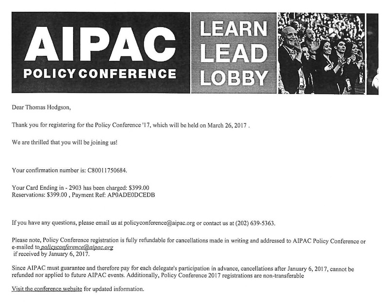
In March 2017 Hodgson attended the AIPAC policy conference in Washington, also on the public dime. AIPAC, which bills itself as “America’s Pro-Israel Lobby,” is the most powerful foreign lobby in the United States. While Democrats (and this includes most American Jews) have increasingly distanced themselves from Israel’s hard-line policies, Republicans have embraced AIPAC, and AIPAC has returned the favor by supporting extreme Christian Right Republican candidates.
Hodgson has not been particularly discriminating in jumping under the political bedsheets with antisemites and crackpots. A poster boy for this is Rick Wiles, an End Times believer and a fierce antisemite.
In November 2014 Hodgson appeared on TruNews — the “End Times Newscast” with Rick Wiles, a conspiracy theorist who, like Hodgson, advocates locking up people whose politics he disagrees with. Wiles devoted “the first half of the program to recount several profound prophetic dreams his family received years ago,” and in the second half Wiles interviewed Hodgson, who discussed immigration and his work with FAIR.
Among Wiles’ more deranged statements in recent years: that Obama was inspired by Lucifer, that Obama killed Supreme Court Justice Scalia as a pagan human sacrifice, that the Irgun has kill teams in America, and that Jews will use gun control laws to kill Christians.
But for Hodgson it always seems to boil down to immigration.
In 2018 Hodgson watchers took note when the sheriff announced with great fanfare that the National Sheriff's Association (NSA) would be crowdfunding Trump's wall. But Hodgson's NSA project folded after raising less than $100K in three months — despite his false claim that excessive web traffic had crashed the site. For a time Hodgson’s old NSA site redirected donors to a group called the American Border Foundation.
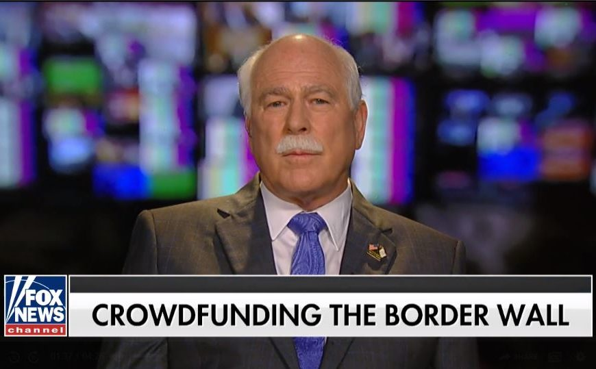
When Hodgson began his association with the American Border Foundation, its Director of Communications was Jeremy Messina, who identifies with the white Nationalist Identitarian movement and whose Facebook postings bore striking similarities with the Buffalo shooter’s manifesto.
The American Border Foundation’s crowdfounding scheme never reached its $450 million goal. During its three-year run, ABF’s less-than 4,000 donors raised barely over $227K. Its founder, Gary Dolan, had tried wall-building before via a FundRazr campaign that raised only $12K. The fund's managing director, Quentin Kramer – who has ties to FAIR sister organization AVIAC – went on the conspiracy and white supremacist circuit trying to sell the project.
Kramer appeared on the far-right Southern Sense podcast and on an “anti-federalist” program that frequently invokes Article IV, Sec. 4, Clause 2 of the Constitution ("the United States shall guarantee to every State in this Union a Republican Form of Government, and shall protect each of them against Invasion...").
Despite lackluster donations, Hodgson claimed that as a sheriff he could cut through the red tape to ensure donations got to the Department of Homeland Security and that the wall would be built. In November of 2018, Hodgson said he submitted a form to DHS to donate $100,000 to pay for “border barriers on the Southern border.” But DHS informed the American Border Foundation it could not accept the donations.
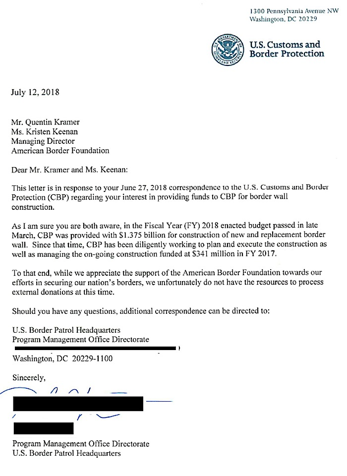
Nevertheless, in 2019 Hodgson and Kramer were still acting as if the crowdfunding effort was still viable. Both spoke at a FAIR-AVIAC-sponsored press conference in Washington, whose main function was to highlight the “Angel Families” who had lost family members to auto accidents or crimes committed by undocumented migrants.
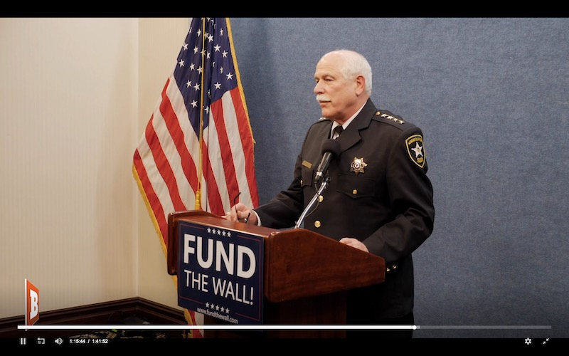
As of today, the whereabouts of $227,657 in ABF donations are still unknown. Neither the ABF nor Hodgson has ever responded to information requests from Bristol County for Correctional Justice or American Oversight.
Hodgson’s latest project is called Protect America Now, which looks like nothing more than several God-and-Country sheriffs who oppose immigration reform, gun control, voting rights, secularism, and socialism. The sheriffs include: the group’s spokesman, Pinal County (AZ) Sheriff Mark Lamb; Green County (MO) Sheriff Jim Arnott; Livingston County (IL) Sheriff Tony Childress; Bristol County (MA) Sheriff Thomas Hodgson; Brevard County (FL) Sheriff Wayne Ivey; Culpeper County (VA) Sheriff Scott Jenkins; and Wicomico County (MD) Sheriff Mike Lewis.
Despite Protect America Now’s call to “stand strong against lawlessness,” its sheriffs refuse to enforce state gun control laws or COVID-19 mask or social-distancing mandates. Instead, harkening back to the original function of American sheriffs as slave patrols, this motley crew support arming and deputizing their mainly white county residents against “urban” protesters and – again echoing the Great Replacement – border “invaders.”
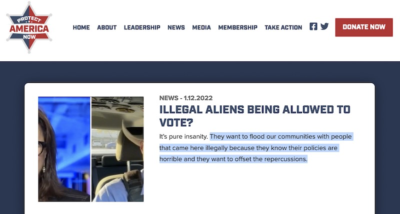
Pinal County (AZ) Sheriff Mark Lamb is the public face of Protect America Now and a “Constitutional Sheriff” who claimed in one speech to the Arizona Police Association that “the constitution is hanging by a thread.” Lamb belongs to the Constitutional Sheriffs and Peace Officers Association founded by former Arizona sheriff Richard Mack and spoke at CSPOA’s 2020 Virginia Conference. At least three other Protect America Now sheriffs, Thomas Hodgson, Scott Jenkins and Wayne Ivey, are also CSPOA members.
Contrary to Protect America Now’s marketing on Fox News and elsewhere — Protect America Now is not Lamb’s creation. It turns out the incorporator and director of Protect America Now is Nathan Sproul, a GOP operative who has been accused of, fired for, and charged with multiple counts of voter fraud, and who set up Protect America Now most recently in June 2020. As a sometime associate of Karl Rove, Sproul’s entire career has been devoted to voter suppression and dirty tricks.
The trademark for Protect America Now was created in 2004 and was the brainchild of Kathy W. McKee, who is still listed on a PAC registration with a similar name. McKee was also the driving force behind a 2004 Arizona voter suppression bill, Proposition 200. As soon as McKee got Prop 200 on the ballot, the GOP and every brownshirt and satin-sheeted group in Arizona took an interest. But McKee made the mistake of bringing an unfiltered white supremacist, Dr. Virginia Abernethy, onto the organization’s national advisory board. Abernethy was so extreme for the rest of the racists that the Federation for American Immigration Reform removed Abernethy and took control over PAN to save Prop 200, despite previous support for Abernethy.
The lawyer who incorporated Protect America Now for Sproul is Kory Langhofer, an equally ethically-unencumbered GOP lawyer who fought both the Mueller investigation for Trump and challenged Arizona election results for Trump. Protect America Now and Langhofer’s offices share a common address. Langhofer is also the co-owner of Signafide, a company that uses AI to challenge ballot signatures.
As the GOP increasingly embraces nativism, the extremists have gone mainstream. The innvolvement by high level GOP operatives like Nathan Sproul and Kory Langhofer using sheriffs like Hodgson and their dangerous militia and white supremacist connections says a lot about the party’s transformation.
Not so very long ago it was racists and xenophobic extremists who worked behind the scenes to support the GOP. Now it’s the Republican Party operating behind the scenes to support the extremists.
A couple of years ago, someone noticed that an archived page from the Bristol County Sheriff’s Department featured an official portrait of Hodgson wearing a Confederate necktie. Howard Graves, a research analyst with the Southern Poverty Law Center (SPLC), recognized Hodgson’s tie as an “Old South Confederate Necktie” which resembles the Confederate battle flag and is sometimes called an Anglo-Confederate society tie. Graves added, “Many people affiliated with the broader neo-Confederate movement wear that tie either in necktie or bowtie form.” Mark Pitcavage with the Anti-Defamation League, agreed: “The tie in the photograph seems certainly to be derived from the design of the Confederate flag.”
Despite everything you’ve read so far, Hodgson vehemently denies his sly tip of the hat to the Confederacy. “They know I would not be wearing anything that makes me the poster boy for bigotry.”
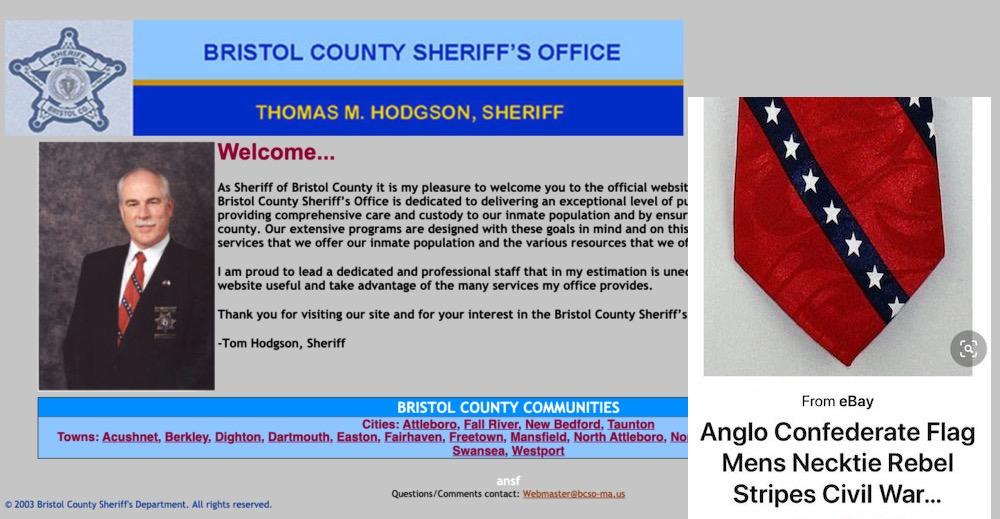
Hodgson’s spokesman provided an even more flaccid defense – that Hodgson “has never heard of neo-confederates or anglo-Confederate societies or anything like that.”
Despite the faux outrage and feigned innocence, in the last 24 years Bristol County voters have had ample time to observe a sheriff who openly advocates for white supremacy and rubs elbows with neo-Confederates and neo-Nazis. In fact, there is no one in Bristol County who qualifies better than Hodgson as a poster boy for bigotry.
It’s time for voters to finally send this companion of fools into retirement in November.